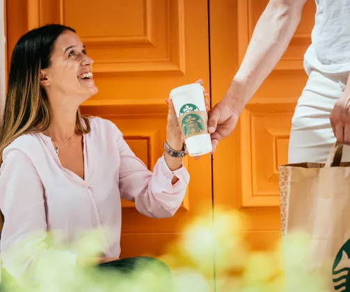

Embracing sustainability
Vanaf 1 juli 2023 brengen we kosten in rekening voor alle wegwerp items gemaakt van plastic. Go Green 💚
Onze iconische Pumpkin Spice Latte is terug! Op ons menu vind je de warme kruiden van dit seizoen terug in een warme of ijskoude Latte, Cold Brew of Frappuccino.
De Pumpkin Spice blend van pompoen, gember, kaneel en enkele geheime extra's brengt je helemaal in de stemming voor dit seizoen en gaat perfect samen met onze nieuwe Creamy Carrot Cake, ideaal voor deze koudere dagen. Ontdek de nieuwe smaken in onze winkels 🍰
Beperkte oplage en exclusief verkrijgbaar bij Starbucks. Bestel nu rechtstreeks aan je deur via Uber Eats of Thuisbezorgd.
Jouw favorieten bezorgd aan huis!
Mis dit voorjaar nooit meer een drankje met Starbucks® Bezorgd.
Geniet van al je favorieten aan en knus op je bank terwijl je je favoriete serie bingewatcht.
We bezorgen tot aan je deur, zodat je kunt genieten van je Iced Latte of Caramel Frappuccino in de comfort van je eigen huis.
Vanaf 1 juli 2023 brengen we kosten in rekening voor alle wegwerp items gemaakt van plastic. Go Green 💚
Blijf op de hoogte van onze laatste Starbucks verhalen en nieuws.
Ontdek meer over ons bedrijf en geschiedenis.
Genieten van je favoriete Starbucks® drankjes vanuit het comfort van je huis is dichterbij dan je zou denken. Het is de koffie die je kent en waar je van houdt, in je favoriete mok. Kijk of bezorging bij jou in de buurt mogelijk is. Start je bestelling om je Starbucks® favorieten te laten bezorgen via Uber Eats en Thuisbezorgd.